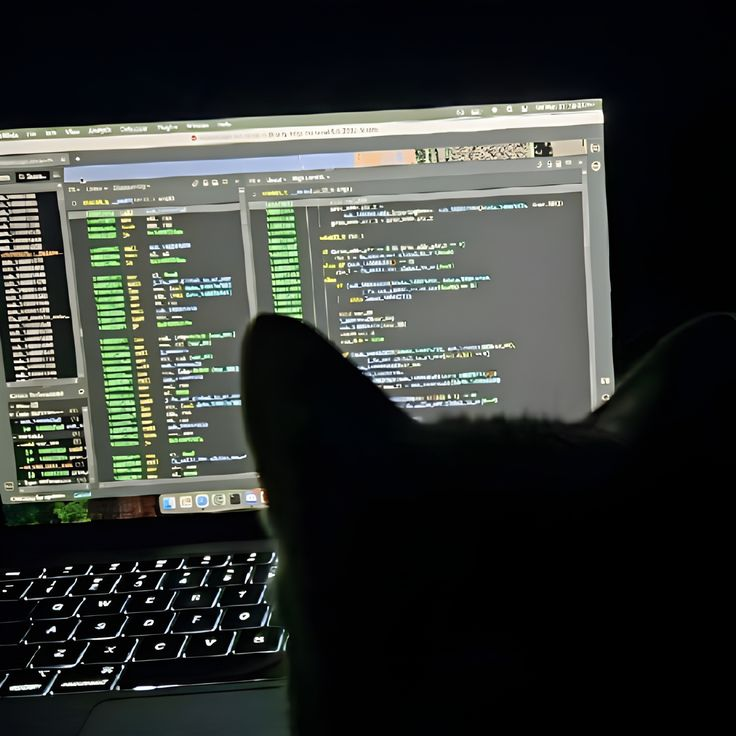
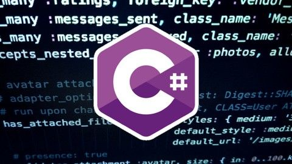

- Блог Насти, студентки 4 курса -
Привет! Меня зовут Настя, я учусь на 4 курсе колледжа на специальности «информационные системы и программирование». В рамках практической работы я решила поделиться несколькими неочевидными советами по разработке, которые сильно упростили мне жизнь.

Многие новички думают, что запрос LINQ выполняется в момент его написания. На самом деле он выполняется только в момент итерации (например, в цикле foreach или при вызове .ToList()). Это называется отложенным выполнением (Deferred Execution).
Совет: Если данные в источнике изменятся до того, как вы вызовете .ToList(), вы получите измененные данные, что может привести к багам. Фиксируйте результат сразу, если данные мутабельны!
// Запрос создан, но НЕ выполнен
var query = numbers.Where(n => n > 10);
numbers.Add(15); // Это число попадет в результат!
// Выполнение происходит здесь
var result = query.ToList();
Отладка — это мощный инструмент, который поможет вам находить и исправлять ошибки в вашем коде. Не бойтесь ставить точки останова и исследовать состояние программы.
Совет: Используйте отладчик, чтобы понять, как работает ваш код, и выявить, где именно происходят ошибки.
Тестирование вашего кода — это ключ к созданию надежных приложений. Юнит-тесты помогают проверить каждую часть вашего кода изолированно.
Совет: Используйте фреймворки для юнит-тестирования, такие как NUnit или xUnit, чтобы упростить процесс тестирования.
Документация по языкам программирования и библиотекам — это ваши лучшие друзья. Многие проблемы можно решить с помощью поиска в документации.
Совет: Прежде чем задавать вопрос на форуме, потратьте время на изучение документации — возможно, вы найдете ответ сами!
Без понимания основ алгоритмов сложно писать эффективный код. Даже в веб-разработке знание сложности операций (O-нотация) помогает избежать тормозов.
Совет: Решайте задачи на LeetCode или Codewars хотя бы 15 минут в день. Это прокачивает мышление и помогает на собеседованиях.